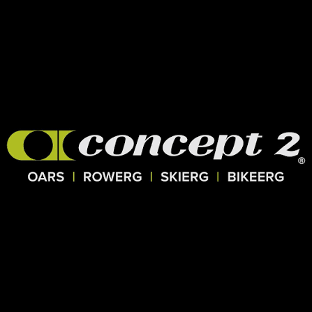

Professional Summary
Motivated student interested in technology, web development, and problem solving. Experienced with academic programming projects, web design assignments, and teamwork through competitive rowing. Interested in continuing to develop technical and communication skills through education and future work opportunities.
Education
Illinois Institute of Technology
Student
Relevant coursework includes Internet Technologies and Web Design, calculus, physics, and computer science.
Technical Skills
- HTML
- CSS
- JavaScript
- Java
- Git and GitHub
- Visual Studio Code
- Basic web development
- Problem solving and debugging
Academic Experience
Internet Technologies and Web Design
Created websites from scratch using HTML and learned the fundamentals of webpage structure, navigation, images, links, forms, and multimedia.
Used GitHub to manage and publish web development assignments.
Computer Science
Worked with Java programming concepts including classes, objects, arrays, two-dimensional arrays, and user input.
Athletic Experience
Competitive Rowing
Several years of rowing experience involving both on-water training and indoor rowing. Training has required consistency, teamwork, physical preparation, and the ability to work toward long-term performance goals.

Strengths
- Problem solving
- Teamwork
- Persistence
- Learning new technology
- Time management
- Attention to detail
Career Interests
I am interested in careers involving technology and computers. Web development and software development are areas that I would like to explore further as I continue my education.
References
References available upon request.